Visualizing data in the Spitzer Heritage Archive
Contents:
+Overview
+FITS Viewer
+Spectrum Viewer
Overview
Powerful visualization tools were important to the original Spitzer
observation planning and archive tools (Spot and Leopard), and the
descendents of these tools are included in the SHA. These tools can
be used to understand exactly what each observation did and in
deciding what data to download.
FITS images from Spitzer or other bands (or from your computer) can be
loaded into the viewer. If performing an SHA search, the footprint of
the observation can be overlaid on an image of your choice.
Individual data products can be viewed interactively and flux density
levels assessed.
The viewer within the SHA itself can be found in two places. Clicking
on "Read FITS File" on the top set of blue tabs allows you to load a
FITS file from disk or from a variety of online sources, resulting in
a visualization-only panel. Alternatively, and perhaps more
frequently encountered, once a search is completed, several of the
tabs in the Details pane on the right result in a visualization window
so that you can examine the data interactively. Please see the help page on the details pane
for complete information, but in summary, there is one tab entitled
"Details" that has text, and the rest have various representations of
the data.
FITS Viewer
All of the interactive image visualization tools work the same basic
way, and here we describe these basic options, in basically the order
in which you might encounter them in the window.
- Interactive exploration of the image with the mouse.
- Move your mouse over any image that is loaded into the FITS
viewer. A pop-up window appears in the upper right with a variety of
useful items. Some information is updated in real time (such as
coordinates); some information (such as flux densities) is updated
when you stop moving your mouse for a second or two. The image can be
interactively investigated in this fashion. This popup window
automatically appears when your mouse is over the window; if you want
to make it 'stick', click on the lock icon.
- Finding out more about the displayed image.
- The top of the display (just under the tab headings) gives a
title of the image. This abbreviation may be a little cryptic. ISSA or
IRIS are both IRAS data. IRAC and MIPS are self-explanatory. 2MASS
comes up by default to be used for small fields of view, and as such,
the Spitzer fields of view may be off the edge; this will be fixed in
a later release.
 Expanding the image.
Expanding the image.
- Clicking on this icon will enlarge the visualization
window into a window that takes up the whole browser window. This
also enables you to look at more than one visualization window at a
time.
- More about the expanded view
- Depending on what you've just been looking at, this expanded
view may give you choices of multiple panes. Just to the right of the
"Collapse" button in the upper right, you have these choices: 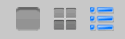 The leftmost one shows one image at a time, the
center one tiles all the available images, and the rightmost one
results in a pop-up window allowing you to choose which plot to
display. If you choose to display one image at a time, the top of the
frame changes to something like this:
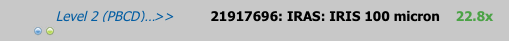
which allows you (via the blue/green buttons) to scroll through your
list of images (only two images here), with an indication of which
image you are currently inspecting (a Level 2 product footprint here,
overlaid in an IRAS image).
 Image options.
Image options.
- There are a variety of display options that can be configured once
you click on the image options icon. If you do that, you get a popup
window at the top of your browser:
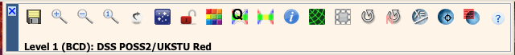
from which you can select a variety of options, now described.
- 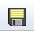 Saving the FITS file.
- The diskette icon will allow you to save the current image as a
FITS or PNG file to your local disk. Note that you control
where the image is saved on your disk through your browser; your
browser may be configured to store all downloads in a particular
location on your disk.
Note that, as of this version, whether you save FITS or PNG, what is
saved will not include any overlays or annotations you may have placed
on the image. Saved FITS images will not save the color stretches.
- 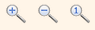 Zooming in or out.
-
Clicking on these magnifying glass icons zooms you in or out of the
image. The readout of how many times you are zoomed appears at the top
of the visualization window. To return to a zoom corresponding to the
original size, click on the magnifying glass with a 1 enclosed. Note
that there is a maximum zoom allowed -- 64 times. To enlarge things
more than that, please select another background image, one of smaller
spatial extent.
- 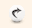Restoring everything to the
defaults
- If you've played around a lot with the image, you may want to undo
everything you've done. Click this button to restore everything to their original
default values.
- 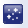 Changing the background
image.
- By default, the SHA tries to pick a good background
image, but you may wish to try another wavelength or field of view. By
clicking on this icon, you bring up a pop-up window. The first part
of this window shows the central RA/Dec that you are about to request
(you can change this by clicking on "Modify Target" and all the usual
options appear). The next part of this window has a series of tabs:
IRAS (12, 25, 60, and 100 microns), 2MASS (J, H, and Ks bands, or
1.25, 1.65, and 2.17 microns), MSX (8.28, 12.13, 14.65, and 21.3
microns), DSS (the usual red/blue plates and a variety of scan
options), a FITS file from your local disk, or a URL that you can
enter so the browser can retrieve a FITS file from the web. From this
pop-up, you can also choose to create a 3-color image, loading a new
FITS file separately for each color plane. Note that this 3-color
option only appears for background images, not Spitzer data, unless
you have loaded Spitzer data from disk.
 Locking or changing the background
image.
Locking or changing the background
image.
- You can lock the background image or change it to be
something else by clicking on this image.
- 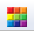 Changing the color table.
- Click on the colorful icon to change the color table of the
background image. A wide variety of color table choices appear in a
pulldown when
you click the button, and you can select your new color table.
 Changing the color table stretch.
Changing the color table stretch.
- Click on this icon to change the specific stretch of the color table
to be one of several pre-defined standard options. The options appear
in a pulldown when you click the button.
 Customizing the color table stretch.
Customizing the color table stretch.
- Click on this icon to customize the specific stretch of the color
table. A pop-up window appears with a histogram of the colors, and
you can interactively change and customize the stretch of the data as
displayed.
 Viewing the FITS header.
Viewing the FITS header.
- This icon
will display a pop-up window with the FITS header of the background
image. You can use this option to view the FITS header of a Spitzer
data product via the Data tab.
 Adding a coordinate grid.
Adding a coordinate grid.
- Click on this
icon to overlay a coordinate grid on the image. Click it again to
remove it.
- 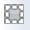 Selecting a region.
- When you
click this icon, at first, nothing seems to happen. However, you can
now click and drag in the image, selecting a box on the image. This
box can be resized by grabbing and dragging the corners of the box.
When you have selected a region of the image, additional icons appear
above the image. These icons will allow you to crop the image to the
selected region (
 ) or obtain statistics on the
region (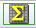).
) or obtain statistics on the
region (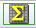).
- 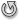 Rotating the image
- This feature allows you to rotate image to any angle of your
choice, in degrees. It will rotate the image counter-clockwise (to the
left) from the original image, not the current view.
 Rotating the image so that North is
up.
Rotating the image so that North is
up.
- Images that you download from IRAS or DSS or 2MASS commonly
are already oriented such that North is up. However, when
interactively investigating Spitzer products, North is not necessarily
up. The Spitzer images and mosaics are constructed to optimize the
resultant size of the mosaic. However, when interactively
investigating the image, it may be helpful to orient North up, and
this icon does that.
 Measuring a distance.
Measuring a distance.
- When you
click this icon, at first, nothing seems to happen. However, you can
now "draw" a line on the image, and the length of the line is
displayed.
- 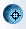 Recentering the image.
- When you click this icon, your image is recentered.
- 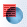 Viewing/changing the order of the layers on
the image.
- If you've been following along by trying these various
options, you now have an image with a lot of annotations on it. If you
click this icon, you will get a pop-up window with a list of all the
layers you have on top of the image. Here you can change what is
displayed and what colors get used for it.
- 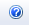 Getting help.
- Clicking on this icon takes you to this help page.
Also see the information on retrieving and using
catalogs.
Spectrum (X-Y Plot) Viewer
Some of the data products associated with spectroscopy are images
(e.g., the original images that were read out from the instrument),
but reduced spectra can be viewed from any results tab (except for the
AOR tab). These files appear as a "Table" in the "File Type" column of
the results table. Select one of them in the results pane, and then
look at the "Data" tab from the details pane, and you will be
able to interactively explore the spectrum. Move your mouse along the
spectrum, and a popup display shows you the corresponding wavelengths
and flux densities. If you are getting no pop-up display, click once in the
window to be sure your computer knows you are there.
(This visualization tool can be used with any x-y plot, but in most
SHA cases, it's used for viewing a spectrum.)
- Finding out more about the displayed spectrum.
- The top of the display (just under the tab headings) gives an
indication of the observation and what is plotted.
- Expanding the spectrum.
- Clicking on this icon will enlarge the visualization
window into a window that takes up the whole browser window. This
also enables you to look at more than one visualization window at a
time.
- More about the expanded view
- Just as for the image view, depending on what you've just been looking
at, this expanded view may give you choices of multiple panes. Just
to the right of the "Collapse" button in the upper right, you have
these choices: The leftmost one shows one
image at a time, the center one tiles all the available images, and
the rightmost one results in a pop-up window allowing you to choose
which plot to display. If you choose to display one image at a time,
the top of the frame changes to something like this:
which allows you (via the blue/green
buttons) to scroll through your list of images (only two images here),
with an indication of which image you are currently inspecting (a
Level 2 product footprint here, overlaid in an IRAS image).
Importantly, though, for the IRS enhanced products, some options
are only available in the expanded view. In the expended view, you
can turn on/off plotting of various orders and synthetic photometry
points.
- Zooming in or out.
- Unlike an image zoom, here you have something called "Rubber
band zoom." Use your mouse to denote a region by
clicking-and-dragging from the upper left to the lower right of the
region on which you'd like to zoom. This region is then expanded in
the viewer. To return to the original view, there is a link at the
bottom of the viewer that says "Zoom out to original chart" which
returns you to the default view.
- "Chart Options"
- For the spectrum visualizations, a "chart
options" link is available in the lower left. This brings up a pop-up
window entitled "XY Plot Options" with various configurable options to
further manipulate your plot.
In the pop-up, you have these options:
- Plot Error -- add the errors to the plot. They appear as a light
grey 'envelope' around the spectrum.
- Plot Synthetic Photometry -- checked by default, this overplots
the synthetic photometry that is part of the IRS enhanced product. If
you are not viewing an IRS enhanced product spectrum, this option does
not appear.
- Plot Style -- change how data are presented on the plot.
The options are "Connected Points", "Unconnected
Points", and "Line". Connected points shows the individual points and
a line connecting them. Unconnected points shows just the individual
points. Line shows just the line connecting the points.
- X min/X max and Y min/Y Max -- manually change the range of the
plot. You can also 'rubber band zoom', as per the above. Please note
that unlike zoom, changing the range drops out-of-bound points, and
some points that were not adjacent before might become connected as
adjacent.
- X Column and Y Column -- change what is being plotted. Click on
the blue circled "i" to get a list of the choices.
"Restore Default" undoes any changes you made, and "Apply" implements
any changes you made.
Note that if you change what is plotted on the Y axis, the ability to
overplot errors and synthetic photometry goes away.
These options are preserved through the current search. It will be
reset to the defaults in the next search, or when the search is
redone.
If the plot ever looks strange, go back and make sure that you have
clicked 'Restore Default' in this pop-up. This always applies to the
current plot.
- "Download Data Table"
- For all spectrum visualizations, a "download data table" link is
available in the lower right. This will allow you to save the source
data table which is being plotted.
- Saving a particular view
- The best way to save a particular view of a particular
spectrum/zoom/annotation/etc. is to do a screen snapshot. The
specifics for this vary according to your platform and OS version.